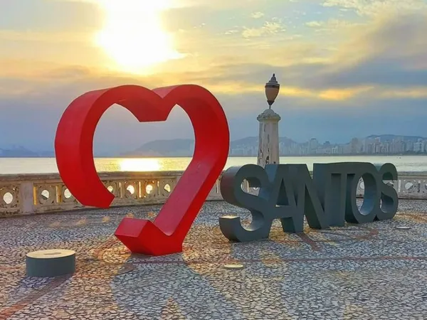

Santos
Cidade portuária com o maior porto da América Latina, famosa por sua orla extensa com jardim premiado pelo
Guinness. É também histórica na exportação de café e reconhecida por seu patrimônio arquitetônico e museus como
o Museu do Café.
Pontos Turísticos
- Orla da praia de Santos (jardim mais extenso do mundo)
- Museu do Café (memória cafeeira)
- Museu Pelé (futebol e cultura)
- Elevador Ponciano Aranha (vista panorâmica)
- Aquário Municipal de Santos (fauna marinha)
